第37章 量子行为
§37-1 原子力学
在前面几章中，我们讨论了一些基本概念，这些概念对理解光——或一般说电磁辐射——的大多数重要现象是必须的（我们将少数几个特殊的论题，明确地说即光密介质折射率的理论和全反射的理论，留到下一年去讲）。我们所讨论的这些内容称作电磁波的“经典理论”。这个理论非常恰当地描述了自然界的许多现象。当时我们还不必去为光的能量总是以颗粒即“光子”的形式出现这一事实而操心。
我们打算研究的下一个论题是包含着大量物质的物体的性质，比方说，它们的力学与热学性质问题。在讨论这些性质时，我们将发现，“经典”（或者旧的）理论几乎立即失效，因为物质实际上是由原子大小的微粒所构成的。然而，我们要处理的仍然只是其中的经典部分，因为这是我们能够应用所学过的经典力学来理解的仅有部分。但是我们不会获得很大的成功。我们将发现，与讨论光不同，讨论物质时很快就会遇到困难。当然，我们也可以一直回避原子效应。不过在这里我们却要插进一段关于物质量子性质的基本观念，即原子物理的量子观念的简短叙述，以便对所略去的是一些什么有一个概念。因为我们必须略去一些不可避免地要接触到的重要题材。
所以，我们现在就来简单介绍 一下量子力学，但真正深入的讨论只能留待以后再进行。
“量子力学”详细描述物质的行为，特别是发生在原子尺度范围内的事件。在极小尺度下的事物的行为与我们有着直接经验的任何事物都不相同。它们既不像波动，又不像粒子，也不像云雾，或弹子球，或悬挂在弹簧上的重物，总之不像我们曾经见过的任何东西。
牛顿曾认为，光是由微粒构成的，但是，正如我们已经知道的那样，当时发现光的行为像一种波动。然而，后来（在20世纪初叶）人们发现，光的行为有时确实又像粒子。又比如，在历史上，电子起先被认为像粒子，后来发现它在许多方面的性质像波。所以实际上它表现得两者都不像。现在我们已放弃了这些说法，我们干脆说：“它两者都不像”。
然而，有一点是幸运的：电子的行为恰好与光相似。原子客体（电子、质子、中子、光子等等）的量子行为都是相同的，它们都是“粒子波”或者随便什么你愿意称呼的名称。所以，我们所学的关于电子（我们将用它作为例子）的性质也可应用到所有的“粒子”，包括光子。
在本世纪的前25年中，人们逐渐积累了有关原子与其他小尺度粒子行为的知识，得以知道极小物体是如何活动的一些线索，由此也引起了更多的混乱，到1926～1927年间，薛定谔、海森伯与波恩终于解决了这些问题，他们最后对小尺度物质的行为作出了协调一致的描述。在这一章中我们将开始研究这种描述的主要特点。
因为原子的行为与我们的日常经验不同，所以很难令人习惯，而且对每个人——不管是新手，还是有经验的物理学家——来说都显得奇特而神秘。甚至专家们也不能以他们所希望的方式去理解原子的行为，而且这是完全有道理的，因为一切人类的直接经验和所有的人类的直觉都只适用于大的物体，我们知道大物体的行为将是如何，但是在小尺度下事物的行为却并非如此。所以我们必须用一种抽象的或想象的方式来学习它，而不是把它与我们的直接经验联系起来。
在本章中，我们将直接讨论以最奇特的方式出现的神秘行为的基本特征。我们选择用来考察的一种现象不可能以任何经典方式来解释——绝对 不可能——但它却包含了量子力学的要点。事实上，它包含的只是 奥秘，从“解释”它是如何起作用的这个意义上来说，我们还不能解释这个奥秘。我们将告诉 你们，它是怎样起作用的。在告诉你它是怎样起作用的同时，我们将把所有量子力学的基本特性都告诉你。
§37-2 子弹实验
为了试图理解电子的量子行为，我们将在一个特制的实验装置中，把它们的行为和我们较为熟悉的子弹那样的粒子的行为以及如水波那样的波的行为作一比较和对照。首先考虑子弹在图37-1所示的实验装置中表现的行为。我们有一挺机枪射出一连串子弹，但它不是一挺很好的机枪，因为它发射的子弹（无规则地）沿着相当大的角度散开，如图所示。在机枪的前方有一堵用铁甲制成的板墙，墙上开有两个孔，其大小正好能让一颗子弹穿过，墙的后面是一道后障（比如说一道厚木墙），它能“吸收”打上去的子弹。在后障前面，有一个称为子弹“检测器”的物体，它可以是一个装着沙子的箱子，任何进入检测器的子弹就被留在那里聚集起来。需要时可以出空箱子，清点射到箱子里面的子弹数。检测器可以（沿我们称为x 的方向）上下移动。利用这个装置，我们可以通过实验找出下列问题的答案：“一颗子弹通过墙上的孔后到达后障上离中心的距离为x处的概率是多少？”首先，你们应当认识到我们所谈的应该是几率，因为不可能明确地说出任何一颗子弹会打到什么地方。一颗碰巧打到孔上的子弹可能从孔的边缘弹开，最终打到不知什么地方。所谓概率，我们指的是子弹到达检测器的机会，这可以用以下方式来量度，数一下在一定时间内到达检测器的子弹数，然后算出这个数与这段时间内打到后障上的子弹总 数的比值。或者，如果在测量时机枪在单位时间内始终发射同样数量的子弹，那么我们所要知道的概率就正比于在某个标准时间间隔内到达检测器的子弹数。
图37-1 子弹的干涉实验
眼下，我们愿意设想一个多少有点理想化 的实验，其中子弹不是真正的子弹，而是不会裂开 的子弹，即它们不会分裂成两半。在实验中，我们发现子弹总是整颗整颗地到达，我们在检测器中找到的总是一颗一颗完整的子弹。如果机枪射击的射率十分低，那么我们发现在任何给定时刻，要么没有任何东西到达，要么有一颗，并且只有一颗——不折不扣的一颗——子弹打到后障上，而且，整颗的大小也必定与机枪射击的射率无关。我们可以说：“子弹总是 以完全相同的颗粒状到达。”在检测器中测得的就是整颗子弹到达的概率。我们测量的是概率作为x 的函数。用这样的仪器测得的结果画在图37-1（c）上（我们还不曾做过这种实验，所以这个结果实际上是想象的而已），在图上，向右的水平轴表示概率的大小，垂直轴表示x ，这样x 的坐标就对应于检测器的位置。我们称图示的概率为P 12 ，因为子弹可能通过孔1，也可能通过孔2。你们不会感到奇怪，P 12 的值在接近图中心时较大，而在x 很大时则变小。然而，你们可能感到惊奇的是：为什么x =0的地方P 12 具有极大值。假如我们先遮住孔2作一次实验，再遮住孔1作一次实验的话，就可以理解这一点。当孔2被遮住时，子弹只能通过孔1，我们就得到（b）图上标有P 1 的曲线。正如你们会预料的那样，P 1 的极大值出现在与枪口和孔1在一条直线上的x 处。当孔1关闭时，我们得到图中所画出的对称的曲线P 2 。P 2 是通过孔2的子弹的概率分布。比较图37-1的（b）与（c），我们发现一个重要的结果
P 12 =P 1 +P 2 .（37.1）
概率正好相加。两个孔都开放时的效果是每个孔单独开放时的效果之和。我们称这个结果为“无干涉 ”的观测，其理由不久就会明白。关于子弹我们就讲这些，它们整颗地出现，其到达的概率不显示干涉现象。
§37-3 波的实验
现在我们要来考虑一个水波实验。实验的仪器如图37-2所示。这里有一个浅水槽，一个标明为“波源”的小物体由马达带动作上下振动，产生圆形的波。
图37-2 水波的干涉实验
在波源的后面也有一堵带两个孔的墙，墙以外又是一堵墙。为了简单起见，设这堵墙是一个“吸收器”，因而波到达这里后不会反射。吸收器可以用逐渐倾斜的“沙滩”做成，在沙滩前，放置一个可以沿x 方向上下移动的检测器，和先前一样。不过现在这个检测器是一个测量波动的“强度”的装置。你们可以设想一种能测量波动高度的小玩意儿，但其刻度则定标成与实际高度的平方 成比例，这样读数正比于波的强度。于是，我们的检测器的读数正比于波携带的能量 ，或者更确切地说，正比于能量被带至检测器的速率。
在我们这个波动实验中，第一件值得注意的事是强度的大小可以是任意值 ，如果波源正好振动得很弱，那么在检测器处就只有一点点波动。当波源的振动较强时，在检测器处的强度就较大。波的强度可以为任意值。我们不会 说在波的强度上能显示出任何“颗粒性”。
现在，我们来测量不同x 处的波的强度（保持波源一直以同样的方式振动）。我们得到图37-2（c）上标有I 12 的有趣的曲线。
在我们研究电磁波的干涉时，已经知道怎么会产生这种图样。在现在情况下，我们将观察到原始波在小孔处发生衍射，新的圆形波从每一个小孔向外扩展。如果我们一次遮住一个小孔，并且测量吸收器处的强度分布，则得到如图37-2（b）所示的相当简单的强度曲线。I 1 是来自孔1的波的强度（在孔2被遮住时测得），I 2 是来自孔2的波的强度（在孔1被遮住时测得）。
当两个小孔都开放时所观察到的强度I 12 显然不是 I 1 与I 2 之和。我们说，两个波有“干涉”。在某些位置上（在那里曲线I 12 有极大值）两列波“同相”，其波峰相加就得到一个大的幅度，因而得到大的强度。我们说，在这些地方，两列波之间产生“相长干涉”。凡是从检测器到一个小孔之间的距离与到另一个小孔的距离之差为波长整数倍的那些地方，都会产生这种相长干涉。
在两列波抵达检测器时相位差为π （称为“反相”）的那些地方，合成波的幅度是两列波的波幅之差。这两列波发生“相消干涉”，因而得到的波的强度较低。我们预料这种低的强度值出现在检测器到小孔1的距离与到小孔2的距离之差为半波长的奇数倍的那些地方。图37-2中I 12 的低值对应于两列波相消干涉的那些位置。
你们一定会记得I 1 ，I 2 与I 12 之间的定量关系可以用以下方式来表示：来自孔1的水波在检测器处的高度瞬时值可以写成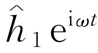 （的实部），这里“振幅”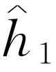 一般来说是复数。波动强度则正比于方均高度，或者利用复数写出时，则正比于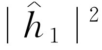 。类似地，对来自孔2的波，高度为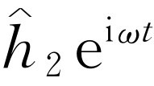 ，强度正比于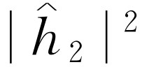 。当两个孔都开放时，由两列波的高度相加得到总高度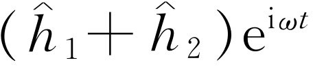 以及强度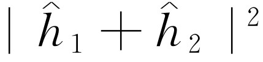 。就我们目前的要求来说，可略去比例常数，于是对干涉波 适用的关系就是
你们将会注意到，这个结果与在子弹的情况下所得到的结果（式37.1）完全不同。如果将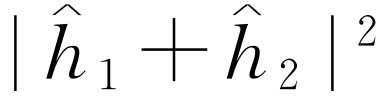 展开，就可以看到
这里δ 是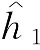 与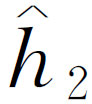 之间的相位差。用强度来表示时，我们可以写成
式（37.4）中最后一项是“干涉项”。关于水波就讲这一些。波的强度可以取任意值，而且显示出干涉现象。
§37-4 电子的实验
现在我们想象一个电子的类似实验，如图37-3所示。我们制造了一把电子枪，它包括一根用电流加热的钨丝，外面套有一个开有孔的金属盒，如果钨丝相对金属盒处于负电位，由钨丝发射出的电子将被加速飞往盒壁，其中有一些会穿过盒上的小孔。所有从电子枪出来的电子都带有（差不多）相同的能量。在枪的前方也有一堵墙（就是一块薄金属板），墙上也有两个孔。这道墙的后面有另一块作为“后障”的板。在后障的前面我们放置一个可移动的检测器，它可以是盖革计数器，或者更好一些，是一台与扩音器相连的电子倍增器。
图37-3 电子的干涉实验
我们应当立即告诉你最好不要试着去做这样一个实验（虽然你可能已做过我们所描述的前面两个实验）。这个实验从未以这种方式做过。问题在于，为了显示我们所感兴趣的效应，仪器的尺寸必须小到制造不出来的程度。我们要做的是一个“理想实验”，之所以要选它，是因为它易于想象。我们知道这个实验将会 得到怎样的结果，因为有 许多其他实验已经做过，在那些实验中，已选用了适当的尺度与比例来显示我们将要描写的效应。
在这个电子的实验中，我们注意到的第一件事是听到检测器（即扩音器）发生明显的“卡嗒”声。所有的“卡嗒”声全都相同，决没有 一半的“卡嗒”声。
我们还会注意到“卡嗒”声的出现很不规则。比如象：卡嗒……卡嗒-卡嗒……卡嗒……卡嗒……卡嗒-卡嗒……卡嗒，等等，无疑，这就像人们听到盖革计数器工作时的声音一样。假如我们在足够长的时间内计数，比如说在许多分钟内听到的卡嗒声的数目，然后再在另一个相等的时间间隔内也进行一次计数，我们发现两个结果非常接近。所以，我们可以谈论“卡嗒”声出现的平均速率 （平均每分钟多少、多少次“卡嗒”声）。
在我们上下移动检测器时，声响出现的速率有快有慢，但是每次“卡嗒”声的大小响度总是相同的。假如我们降低枪内钨丝的温度，“卡嗒”声的速率就会减慢，但是每一声“卡嗒”仍然是相同的。我们还会注意到，如果在后障上分别放置两个检测器，那么这一个或那一个将会“卡嗒”发声，但是决不会两者同时发声（除非有时两次“卡嗒”声在时间上非常靠近，以致我们的耳朵可能辨别不出它们是分开的响声）。因此，我们得出结论，任何到达后障的东西总是呈“颗粒”的形式，所有的“颗粒”都是同样大小：只有“整颗”到达，并且每一次只有一颗到达后障。我们将说：“电子总是以完全相同的颗粒到达。”
与子弹的实验一样，现在我们可以从实验上找出下列问题的答案：“一个电子‘颗粒’到达后障上离中心的距离为不同的x 处的相对概率是多少？”像前面一样，在保持电子枪稳定工作的情况下，我们可以从观察“卡嗒”声出现的速率来得出相对概率。颗粒到达某个x 位置的概率正比于该处的卡嗒声的平均速率。
我们这个实验的结果就是图37-3（c）所画出的标有P 12 的一条有趣的曲线。不错！电子的行为就是这样。
§37-5 电子波的干涉
现在，我们来分析一下图37-3的曲线，看看是否能够理解电子的行为。我们要说的第一件事是，由于它们以整颗的形式出现，每一颗粒（亦可称为一个电子）或者通过孔1，或者通过孔2。我们以“命题”的形式写下这一点：
命题A： 每一个电子不是 通过孔1就是 通过孔2。
假设命题A后，所有到达后障的电子就可分为两类：（1）通过孔1的电子；（2）通过孔2的电子。这样，我们所观察到的曲线必定是通过孔1的电子所产生的效应与通过孔2的电子所产生的效应之和。我们用实验来检验这个想法。首先，我们将对通过孔1的电子作一次测量。把孔2遮住，数出检测器的“卡嗒”声，由响声出现的速率，我们得到P 1 。测量的结果如图37-3（b）中标有P 1 的曲线所示。这个结果看来是完全合乎情理的。以类似的方式，可以测量通过孔2的电子概率分布P 2 。这个测量的结果也画在图上。
显然，当两个 孔都打开时测得的结果P 12 并不是每个孔单独开放时的概率P 1 与P 2 之和。与水波实验类似，我们可以说：“这里存在着干涉”。
对于电子
P 12 ≠P 1 +P 2 .（37.5）
怎么会发生这样的干涉呢？或许我们应当说：“嗯，这大概意味着：电子颗粒要么经过小孔1，要么经过小孔2这一命题是不正确 的，不然的话，概率就应当相加。或许它们以一种更复杂的方式运动，它们分裂为两半，然后……”但是，不对！不可能如此。它们总是整颗地到达……，“那么，或许其中有一些电子经过孔1后又转回到孔2，然后又转过几圈，或者按某个其他的复杂路径……于是，遮住孔2后，我们就改变了从孔1开始 出来的电子最后落到后障上某处的机会……。”但是，请注意！在某些点上，当两个 孔都开放时，只有很少电子到达，但是如果关闭一个孔时，则该处接收到许多电子，所以关闭 一个孔增加 了通过另一个孔的数目。然而，必须注意在图形的中心，P 12 要比P1 +P 2 还大两倍以上。这又像是关闭一个孔会减少通过另一个孔的电子数。看来用电子以复杂方式运动这一假设是很难解释上述两种 效应的。
所有这些都是极其神秘的。你考虑得越多，就越会感到神秘。人们曾经提出许多设想，试图用单个电子以复杂方式绕行通过小孔来解释P 12 曲线，但是没有一个得到成功，没有一个人能由P 1 与P 2 来得到P 12 的正确曲线。
然而，足以令人惊奇的是，将P 1 和P 2 与P 12 联系起来的数学 是极其简单的。因为P 12 正好像图37-2的曲线I 12 ，而那条曲线 的得来是简单的。在后障上发生的情况可以用两个称为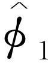 和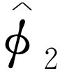 的复数（当然它们是x 的函数）来描述。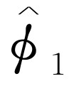 的绝对值平方给出了孔1单独开放时的效应。也就是说，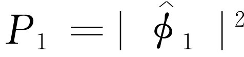 。同样孔2单独开放时的效应由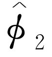 给出，即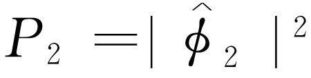 。两个孔的联合效应正是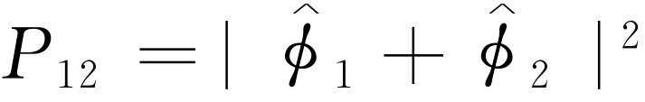 。这里的数学 与水波的情形是一样的（很难看出从电子沿着某些奇特的轨道来回穿过洞孔这种复杂的运动中能得出如此简单的结果）！
我们的结论是：电子以颗粒的形式到达，像粒子一样，这些颗粒到达的概率分布则像波的强度的分布。正是从这个意义上来说，电子的行为“有时像粒子，有时像波”。
顺便指出，在处理经典波动时，我们定义强度为波幅平方对时间的平均值，并且使用复数作为简化分析的数学技巧。但是在量子力学中结果发现振幅必须 用复数表示，仅有实部是不行的。目前，这是一个技术上的问题，因为公式看上去完全一样。
既然电子穿过两个孔到达后障的概率分布如此简单［虽然它并不等于（P 1 +P 2 ）］，要说的一切实际上就都在这里了。但是在自然界以这种方式活动的事实中，却包括了大量的微妙之处。我们现在打算向你们说明其中的一些微妙所在。首先，到达某个特定点的电子数目并不 等于通过孔1的数目加上通过孔2的数目，与从命题A本应得出的推论相反。所以，毋庸置疑，我们应该作出结论说，命题A是不正确的 。电子不是 通过孔1就是 通过孔2，这一点并不 正确。但是这个结论可以用其他实验来检验。
§37-6 追踪电子
我们现在来考虑如下的一个实验。在前述的电子仪器中我们加上一个很强的光源，光源放置在墙的后面并在两个小孔之间，如图37-4所示。我们知道，电荷能散射光，这样，当电子在到达检测器的途中通过光时，不论它是怎样通过的，都会将一些光散射到我们的眼睛中，因而我们可以看见 电子在哪里飞过。比方说，假如电子采取经过孔2的路径，如图37-4所示，我们应当看到来自图中标有A 的位置附近的闪光。如果电子经过孔1，我们可以预料在上面的小孔附近将看到闪光。要是发生这样的情形，因为电子分为两半，我们同时在两个位置上见到闪光多好……让我们做一下实验吧！
图37-4 另一个电子的实验
我们所看到的情况是：每当 我们由电子检测器（后障处的）听到一声“卡嗒”时，我们也见到 闪光——不是 在靠近孔1处就是 在靠近孔2处的闪光。但是从未 同时在两处见到！无论将检测器放到哪里，我们都观察到同样的结果。由这样的观察可以断言，在查看电子时，我们发现电子不是通过这个孔，就是通过另一个孔。在实验上，命题A必然是正确的。
那么，在我们否定
命题A的论证中，有什么不对呢？为什么P
12
不
正好等于（P
1
+P
2
）？我们还是回到实验上去！让我们盯住电子，看看它们究竟做些什么。对于检测器的每一个位置（x
坐标），我们都数出到达的电子数，同时也
通过对闪光的观察记录下它们经过的是哪一个孔。我们可以这样来记录：每当我们听到一声“卡嗒”时，如果在孔1附近见到闪光，那么就在第一栏中作一个记录，如果在孔2附近见到闪光，那么就在第二栏中作一个记录。所有抵达的电子都可记录在这两类之一中，即经过孔1的一类和经过孔2的一类。由第一栏的记录我们可以得到电子经由孔1到达检测器的概率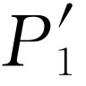
；而由第二栏的记录则可得到电子经由孔2到达检测器的几率 。如果现在对许多x
的值重复这样的测量，我们就得到图37-4（b）所画的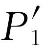
与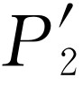
的曲线。
。如果现在对许多x
的值重复这样的测量，我们就得到图37-4（b）所画的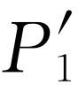
与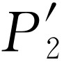
的曲线。
你们看，这里没有什么过分令人惊奇的事。所得到的 与我们先前遮住孔2而得到的P 1 完全相似； 则与遮住孔1所得到的P 2 相似。所以，像通过两个小孔这样的复杂情况是不 存在的。当我们跟踪电子时，电子就像我们所预料的那样通过小孔。无论孔2是否关闭，我们所看到的通过孔1的电子分布都相同。
但是别忙！现在 ，总概率 ，即电子以任何途径到达检测器的概率又是多少呢？有关的资料早就有了。我们现在假想从未看到过闪光，而把先前分成两栏的检测器的“卡嗒”声次数归并在一起。我们只须 把这些数加 起来。对于电子经过任何一个 孔到达后障的总概率，我们确实得出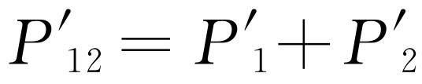 。这就是说，虽然我们成功地观察到电子所经过的是哪个孔，但我们不再得到原来的干涉曲线P 12 ，而是新的、不显示干涉现象的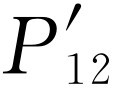 曲线！如果我们将灯熄灭的话，P 12 又出现了。
我们必须推断说：当我们观察电子 时，它们在屏上的分布与我们不观察电子时的分布不同。也许这是由于打开光源而把事情搞乱了？想必是由于电子本身非常微妙，因而光波受到电子散射时给电子一个反冲，因而改变了它们的运动。我们知道，光的电场作用在电荷上时会对电荷施加一个作用力。所以也许我们应当 预期运动要发生改变。不管怎样，光对电子有很大的影响。在试图“跟踪”电子时，我们改变了它的运动。也就是说，当电子散射光子时所受到的反冲足以改变其运动，以致原来它可能 跑到P 12 为极大值的那些位置上，现在却反而跑到P 12 为极小值的那些位置上；这就是为什么我们不再看到波状干涉效应的原因。
你们或许会想：“别用这么强的光源！使亮度降低一些！光波变弱了，对电子的扰动就不会那么大。无疑，若使光越来越暗淡的话，最后光波一定会弱得使它的影响可以忽略”。好，让我们来试一下。我们观察到的第一件事是电子经过时所散射的闪光并没有 变弱。它总是同样大小的闪光 。使灯光暗淡后唯一发生的事情是，有时，我们听到检测器发生一下“卡嗒”声，但根本看不到闪光 ，电子在没有“被看到”的情况下跑了过去。我们所观察到的是：光的行为也像电子，我们已知 它是波状的，但是现在发现它也是“颗粒状”的。它总是以整颗的形式（我们称为“光子”）到达或者被散射。当我们降低光源的强度 时，我们并没有改变光子的大小 ，而只是改变了发射它们的速率。这 就解释了为什么在灯光暗淡时有些电子没有被“看到”就跑了过去；当电子经过时，周围正好没有光子。
假如真的是每当我们“见到”电子，我们就看到同样大小的闪光，那么所看到的总是 受到扰动的电子，这件事使人多少有点泄气。不管怎样，我们用暗的灯光来做一下实验。现在，只要听到检测器中一声“卡嗒”，我们就在三栏中的某一栏记下一次：栏（1）记的是在孔1旁看到的电子；栏（2）记的是孔2旁看到的电子，根本没有看到电子时，则记在栏（3）中。当我们把数据整理出来（计算概率）后可以发现这些结果：“在孔1旁看到”的电子具有类似于 的分布；“在孔2旁看到”的电子具有类似于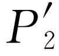 的分布（所以“在孔1或者孔2旁看到”的电子具有类似于 的分布）；而那些“根本没有看到”的电子则具有类似于图37-3的P 12 那样的“波状”分布！假如电子没有被看到 ，我们就会发现干涉现象 ！
这个情形是可以理解的，当我们没有看到电子时，就没有光子扰动它，而当我们看到它时，它已经受到了光子的扰动。由于光子产生的都是同样大小的效应，所以扰动的程度也总是相同的，而且光子被散射所引起的效应足以抹掉任何干涉现象。
难道没有某种 可以不扰动电子而又使我们能看到它们的方法吗？在前面的一章中，我们已经知道，“光子”携带的动量反比于它的波长（p =h /λ ）。无疑当光子被散射到我们的眼中时，它给于电子的反冲取决于光子所携带的动量。对！如果我们只想略微扰动一下电子的话，那么应当降低的不是光的强度 ，而是它的频率 （这与增加波长一样）。我们使用比较红的光，甚至用红外光或无线电波（如雷达），并且借助于某种能“看到”这些较长波长的仪器来“观察”电子的行径。如果我们使用“较柔和”的光，那么或许可以避免对电子扰动太大。
现在我们用波长较长的波来做实验。我们将利用波长越来越长的光重复进行实验。起先，看不到任何变化，结果是一样的。接着，可怕的事情发生了，你们会记得，当我们讨论显微镜时曾指出过，由于光的波动性质 ，对两个小点彼此可以靠得多近而仍可视为两个分离的点存在着一个极限距离。这个极限距离的大小与光波波长的数量级相同。所以如果我们使波长大于两个小孔之间的距离，我们看到在光被电子散射时产生一个很大 的模糊不清的闪光。这样就不再能说出电子通过的是哪一个孔了！我们只知道它跑到某处去！正是对这种波长的光，我们发现电子所受到的反冲已小到使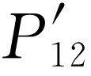 看来开始像P 12 ——即开始出现某种干涉的效应。只有在波长远大于两个小孔之间的距离时（这时我们完全不可能说出电子跑向何处），光所引起的扰动才充分地减小，因而我们又得到图37-3所示的曲线P 12 。
在我们的实验中，我们发现不可能这样安排光源，使人们既可以说出电子穿过哪个小孔，同时又不扰动分布图样。海森伯提出，只有认为我们的实验能力有某种前所未知的基本局限性，那么当时发现的新的自然规律才能一致。他提出了作为普遍原则的不确定性原理 ，在我们的实验中，它可以这样表述：“要设计出一种仪器来确定电子经过哪一个小孔，同时又不使电子受到足以破坏其干涉图样的扰动是不可能的”。如果一架仪器能够确定电子穿过哪一个小孔的话，它就不可能 精致得使图样不受到实质性的扰动。没有一个人曾找出（或者甚至想出）一条绕过不确定性原理的途径。所以我们必须假设它描述的是自然界的一个基本特征。
我们现在用来描写原子（事实上描写所有物质）的量子力学的全部理论都取决于不确定性原理的正确性。由于量子力学是这样一种成功的理论，我们对于不确定性原理的信任也就加深了。但是如果一旦发现了一种能够“推翻”不确定性原理的方法，量子力学就会得出自相矛盾的结果，因此也就不再是自然界的有效的理论，而应予以抛弃。
“很好”，你们会说：“那么命题A呢？电子要么通过小孔1，要么通过小孔2这一点是正确的，还是不 正确的呢？”唯一可能作出的回答是，我们从实验上发现，为了使自己不致陷于自相矛盾，我们必须按一种特殊方式思考问题。我们所必须说的（为了避免作出错误的预测）是：如果人们观察小孔，或者更确切地说，如果人们有一架仪器能够确定电子究竟通过孔1还是孔2的话，那么他们就能够 说出电子或者穿过孔1，或者穿过孔2。但是 ，当人们不 试图说出电子的行径，当实验中对电子不作任何扰动时，那么他们可以不 说电子或者通过孔1，或者通过孔2。如果某个人这么说了，并且开始由此作出任何推论的话，他就会在分析中造成错误。这是一条逻辑钢丝，假如我们希望成功地描写自然的话，我们就必须走这一条钢丝。
如果所有物质（以及电子）的运动都必须用波来描写，那么我们第一个实验中的子弹怎样呢？为什么在那里我们看不到干涉图样？结果表明：对于子弹来说，其波长是如此之短，因而干涉图样变得非常精细。事实上，图样精细到人们用任何有限尺寸的检测器都无法区别出它的分立的极大值与极小值。我们所看到的只是一种平均，那就是经典曲线。在图37-5中，我们试图示意地表明对大尺度物体所发生的情况。其中（a）图表示应用量子力学对子弹所预期的概率分布。快速摆动的条纹本应表示对于波长极短的波所得到的干涉图案。然而，任何物理检测器都跨越了概率曲线的几个摆动，所以通过测量给出的是图（b）中的光滑曲线。
§37-7 量子力学的基本原理
我们现在来概括地小结一下前面实验中的主要结论。不过，我们将把结果表示成对于这一类的实验普遍适用的形式。假如先定义一个“理想实验”，那么这个小结就可以简单一些。所谓“理想实验”指的是：其中没有我们无法计及的任何不确定的外来影响，即无跳动或其他什么事情。更确切的说法是：“所谓理想实验就是所有的初始条件和最终条件都完全确定的实验。”我们将要说到的“事件”，一般说来就是一组特定的初始与最终条件（例如：“电子飞出枪口，到达检测器，此外没有任何其他事情发生”）。下面就是我们的小结。
小结
（1）在理想实验中，一个事件的概率由一个复数φ 的绝对值平方给出，φ 称为概率幅
（2）当一个事件按几种交替的方式出现时，该事件的概率幅等于各种方式分别考虑时的概率幅之和，此时存在干涉现象
（3）如果完成一个实验，此实验能够确定实际上发生的是哪一种方式的话，则该事件的概率等于发生各个方式的概率之和，此时干涉消失
P =P 1 +P 2 .（37.8）
人们也许还想问：“这是怎样起作用的？在这样的规律背后有什么机制？”还没有人找到过定律背后的任何机制，也没有人能够“解释”得比我们刚才的“解释”更多一些，更没有人会给你们对这种情况作更深入的描写。我们根本想象不出更基本的能够推导出这些结果的机制。
我们希望强调经典理论和量子力学之间的一个非常重要的差别 。我们一直谈到在给定的情况下，电子到达的概率。我们曾暗示：在我们的实验安排中（即使是能作出的最好的一种安排）不可能精确预言将发生什么事。我们只能预言可能性！如果这是正确的，那就意味着，物理学已放弃了去精确预言在确定的环境下会发生的事情。是的！物理学已放弃 了这一点。我们不知道怎样去预言在确定的环境下会发生的事件 ，而且我们现在相信，这是不可能的，唯一可以预言的是种种事件的概率。必须承认，对我们早先了解自然界的理想来说，这是一种节约，它或许是后退的一步，但是还没有能看出避免这种后退的出路。
现在，我们来评论一下人们有时提出的试图避免上述描写的一种见解。这种见解认为：“或许电子有某种我们目前还不知道的内部机构——某些内在变量。或许这种机构正是我们无法预言将会发生什么事情的原因。如果我们能够更仔细地观察电子，就能说出它将到达哪里。”就我们所知，这是不可能的。我们仍会遇到困难。假设在电子内部有某种机构能够确定电子的去向，那么这种机构也 必定能够确定电子在途中将要通过哪一个孔。但是我们不要忘记，在电子内部的东西应当不依赖于我们 的动作，特别是不依赖于我们开或关哪一个孔。所以，如果电子在开始运动前已打定主意：（a）它要穿过哪一个孔，（b）它将到达哪里，我们对选择孔1的那些电子就会得出P 1 ，对选择孔2的那些电子就会得出P 2 ，并且对通过这两个孔的电子得出的概率必定 是P 1 和P 2 之和（P 1 +P 2 ）。看来没有别的解决方式了。但是我们从实验上已经证实情况并非如此。而现在还没有人能够解决这个难题。所以，在目前我们只准备计算概率。我们说“在目前”，但是我们强烈地感觉到很可能永远如此——很可能永远无法解决这个难题——因为自然界实际上就是 如此。
§37-8 不确定性原理
海森伯原来对不确定性原理的叙述就是这样的：假如对任何客体进行测量，并且测定其动量的x 分量时，不确定量为Δp ，那么关于其位置x ，就不可能同时知道得比Δx =h /Δp 更准确。在任何时刻，位置的不确定量和动量的不确定量的乘积必定大于普朗克常数。这是前面所表述的较为一般的不确定性原理的特殊情况。比较普遍的表述是，人们不可能用任何方式设计出这样一个仪器，它能确定在两种可供选择的方式中采取的是哪一种方式，而同时又不扰动干涉图案。
现在我们举一种特殊情况来说明，为了不致陷于困境，海森伯给出的这种关系必须成立。我们对图37-3中的实验设想一种修正方案，其中带有小孔的墙是用一块安置上滚子的板构成的，这样它可以在x 方向上自由地上下滑动，如图37-6所示。仔细观察板的运动，我们可以试图说出电子通过的是哪个小孔。想象一下当检测器放在x =0处时会出现什么情况。我们可以预期对经过小孔1的电子，板必定使它往下偏转，以到达检测器。由于电子动量的垂直分量被改变了，板必定会以相等的动量向相反的方向反冲。它将往上跳动。如果电子通过下面一个小孔，板就会感到一个向下反冲的力。很清楚，对于检测器的每一个位置，电子经由孔1与经由孔2时板所接受的动量是不同的。这样，根本 不必去扰动电子，只要通过观察板 的运动，我们就可以说出电子所采取的是哪一条路径。
现在，为了做到这一点，必须知道电子通过前板的动量。这样测出电子经过后板的动量时，就能算出板的动量改变了多少。但是要记住，根据不确定性原理，我们不能同时以任意高的准确度知道板的位置。而如果我们不知道板的确切 位置，就不能精确地说出两个孔在哪里。对于每个经过小孔的电子来说，小孔都将在不同的位置上。这意味着对于每个电子来说，干涉图样的中心都在不同的位置上。于是干涉图样中的条纹将被抹去。下一章我们将定量地说明，假如我们足够准确地测定板的动量从而由反冲的动量的测量来确定电子经过的是哪一个孔，那么按不确定性原理，该板x位置的不确定量将使在检测器处观察到的图样沿x 方向上下移过一个相当于从极大值到最近的极小值之间的距离。这样一种无规则的移动正好将干涉图样抹去，因而观察不到干涉现象。
不确定性原理“保护”着量子力学。海森伯认识到，如果有可能以更高的准确度同时测出动量与位置的话，那么量子力学大厦就将倒塌。所以，他提出这一定是不可能的。于是人们试图找出一个能同时准确测量的方法，但是没有一个人找到一种方法能够以任何更高的准确度同时测出任何东西——屏障、电子、台球弹子，等等——的位置与动量。量子力学以其冒险但准确的方式继续存在着。